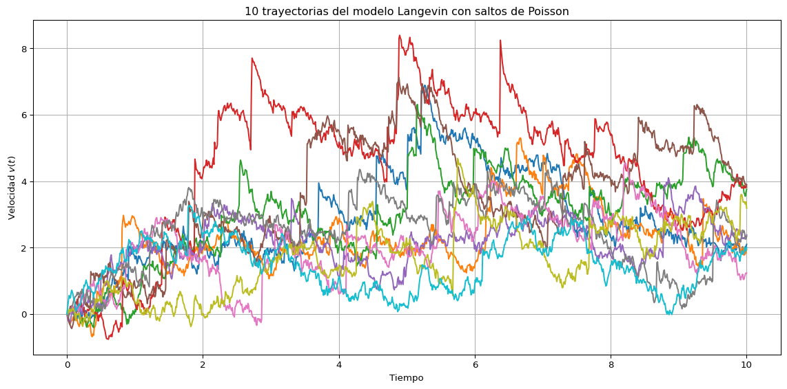
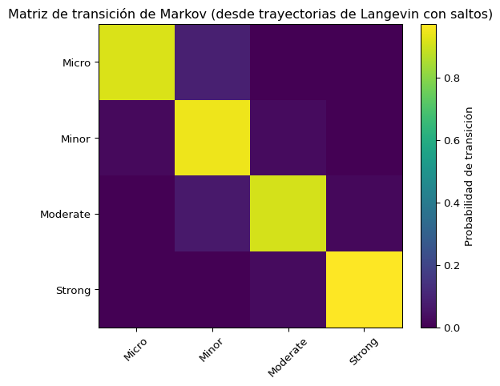

Código
import numpy as np
import pandas as pd
import matplotlib.pyplot as plt
# --- Parámetros base ---
gamma = 0.8
Fext = 1.0
D = 0.5
lambda_poisson = 1.0 # tasa de saltos por segundo
jump_mean = 1.0 # media del tamaño del salto (exponencial)
jump_scale = 0.5 # desviación típica o escala del salto
dt = 0.01
T = 10.0
N = int(T / dt)
n_traj = 10
t = np.linspace(0, T, N)
v = np.zeros((n_traj, N))
# --- Simulación con saltos de Poisson ---
for i in range(n_traj):
for n in range(N - 1):
dW = np.sqrt(dt) * np.random.randn()
dN = np.random.poisson(lambda_poisson * dt)
jump = np.sum(np.random.normal(loc=jump_mean, scale=jump_scale, size=dN)) if dN > 0 else 0.0
v[i, n + 1] = v[i, n] + (-gamma * v[i, n] + Fext) * dt + np.sqrt(2 * D) * dW + jump
# --- Gráfica de trayectorias ---
plt.figure(figsize=(12, 6))
for i in range(n_traj):
plt.plot(t, v[i], label=f"Trayectoria {i+1}")
plt.xlabel("Tiempo")
plt.ylabel("Velocidad $v(t)$")
plt.title("10 trayectorias del modelo Langevin con saltos de Poisson")
plt.grid(True)
plt.tight_layout()
plt.show()
# --- Eventos sísmicos basados en umbral ---
threshold = 1.0
all_mags = []
for i in range(n_traj):
mags = v[i, v[i] > threshold] # eventos donde velocidad supera umbral
mags = 1.0 + (mags - threshold) * 1.5 # transformación a magnitud sísmica
all_mags.extend(mags)
# Clasificación de magnitudes
def classify_event(mag):
if mag < 2.0:
return 'Micro'
elif 2.0 <= mag < 4.0:
return 'Minor'
elif 4.0 <= mag < 6.0:
return 'Moderate'
else:
return 'Strong'
event_classes = [classify_event(m) for m in all_mags]
# DataFrame de eventos
df_events = pd.DataFrame({'Magnitude': all_mags, 'Class': event_classes})
states = ['Micro', 'Minor', 'Moderate', 'Strong']
# --- Matriz de conteo de transiciones ---
transition_counts = pd.DataFrame(0, index=states, columns=states)
for i in range(len(event_classes) - 1):
from_state = event_classes[i]
to_state = event_classes[i + 1]
transition_counts.loc[from_state, to_state] += 1
# --- Matriz de transición ---
transition_matrix = transition_counts.div(transition_counts.sum(axis=1), axis=0)
print("Matriz de transición de Markov basada en trayectorias simuladas:")
print(transition_matrix.round(3))
# --- Visualización de la matriz de transición ---
plt.figure(figsize=(6, 5))
plt.imshow(transition_matrix, cmap='viridis', interpolation='nearest')
plt.colorbar(label='Probabilidad de transición')
plt.xticks(range(len(states)), states, rotation=45)
plt.yticks(range(len(states)), states)
plt.title("Matriz de transición de Markov (desde trayectorias de Langevin con saltos)")
plt.tight_layout()
plt.show()
Matriz de transición de Markov basada en trayectorias simuladas:
Micro Minor Moderate Strong
Micro 0.915 0.084 0.001 0.000
Minor 0.023 0.947 0.029 0.000
Moderate 0.002 0.066 0.909 0.022
Strong 0.000 0.000 0.029 0.971